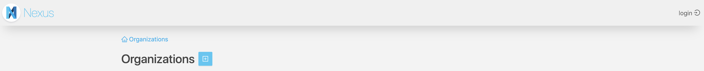
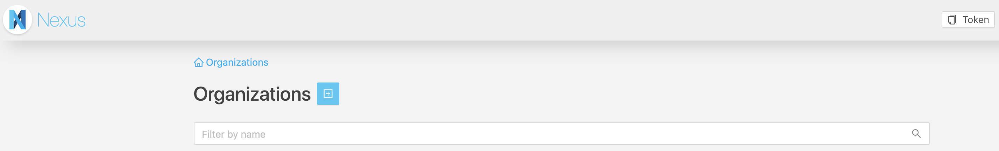

Quick Start
Overview
This example-driven tutorial presents 5 steps to get started with Blue Brain Nexus to build and query a simple knowledge graph. The goal is to go over some capabilities of Blue Brain Nexus enabling:
- The creation of a project as a protected data space to work with
- An easy ingestion of dataset and management of it’s lifecycle
- Querying a dataset to retrieve various information
- Sharing a dataset by making it public
For that we will work with the small version of the MovieLens dataset containing a set of movies (movies.csv) along with their ratings (ratings.csv) and tags (tags.csv) made by users. An overview of this dataset can be found here.
- This tutorial makes use of an AWS deployment of Blue Brain Nexus available at https://nexus-sandbox.io/v1.
- We will be using Nexus CLI, a python client, to interact with the deployment.
Let’s get started.
Set up
Install and setup the Nexus CLI
Since the CLI is written in python, you may want to create a virtual environment for a clean set up. To do so, Conda can be used. If you don’t have it installed follow the instructions here.
conda create -n nexus-cli python=3.5
conda activate nexus-cli
pip install git+https://github.com/BlueBrain/nexus-cli
Create and select a ‘tutorial’ profile
To ease the usage of the CLI, we will create a profile named ‘tutorial’ storing locally various configurations such as the Nexus deployment url.
- Command
-
Full source at GitHubnexus profiles create tutorial https://nexus-sandbox.io/v1 && nexus profiles list - Output
-
Full source at GitHubProfile created. +------------+----------+-------------------------------------+-------+ | Profile | Selected | URL | Token | +------------+----------+-------------------------------------+-------+ | tutorial | Yes | https://nexus-sandbox.io/v1 | None | +------------+----------+-------------------------------------+-------+
Let select the tutorial profile we just created.
- Command
-
Full source at GitHubnexus profiles select tutorial - Output
-
Full source at GitHubSelected profile: tutorial +------------+----------+-------------------------------------+-------+ | Profile | Selected | URL | Token | +------------+----------+-------------------------------------+-------+ | tutorial | Yes | https://nexus-sandbox.io/v1 | None | +------------+----------+-------------------------------------+-------+
Login
A bearer token is needed to authenticate to Nexus. For the purpose of this tutorial, you’ll login using your github account.
- If you don’t have a github account, please follow the instructions on this page to create one.
The following command will open a browser window from where you can login using your github account.
- Command
-
Full source at GitHubnexus auth login - Output
-
Full source at GitHubA browser window will now open, please login, copy your token and use the auth set-token command to store it in the CLI Press ENTER to continue...
From the opened web page, click on the login button on the right corner and follow the instructions.

At the end you’ll see a token button on the right corner. Click on it to copy the token.

The token can now be added to the tutorial profile. In the output of the following command you should see that the token column has now an expiry date.
- Command
-
Full source at GitHubnexus auth set-token $TOKEN && nexus profiles list - Output
-
Full source at GitHub+--------------+----------+-------------------------------------+-----------------------------+ | Profile | Selected | URL | Token | +--------------+----------+-------------------------------------+-----------------------------+ | tutorial | Yes | https://nexus-sandbox.io/v1 | Expiry: YYYY-MM-DD HH:mm:s | +--------------+----------+-------------------------------------+-----------------------------+
Create a project
Projects in BlueBrain Nexus are spaces where data can be:
- managed: created, updated, deprecated, validated, secured;
- accessed: directly by ids or through various search interfaces;
- shared: through fine grain Access Control List.
A project is always created within an organization just like a git repository is created in a github organization. Organizations can be understood as accounts hosting multiple projects.
Select an organization
A public organization named tutorialnexus is already created for the purpose of this tutorial. All projects will be created under this organization.
The following command should list the organizations you have access to. The tutorialnexus organization should be listed and tagged as non-deprecated in the output.
- Command
-
Full source at GitHubnexus orgs list - Output
-
Full source at GitHub+----------------+-------------------+-----------------------------------------------------+------------+ | Name | Description | Id | Deprecated | +----------------+-------------------+-----------------------------------------------------+------------+ | tutorialnexus | Nexus sandbox | https://nexus-sandbox.io/v1/tutorialnexus | False |
Let select the tutorialnexus organization.
- Command
-
Full source at GitHubnexus orgs select tutorialnexus - Output
-
Full source at GitHubtutorialnexus organization selected.
Create a project
A project is created with a label and within an organization. The label should be made of alphanumerical characters and its length should be between 3 and 32 (it should match the regex: [a-zA-Z0-9-_]{3,32}).
Pick a label (hereafter referred to as $PROJECTLABEL) and create a project using the following command. It is recommended to use your username to avoid collision of projects labels within an organization.
- Command
-
Full source at GitHubnexus projects create $PROJECTLABEL && nexus projects list - Output
-
Full source at GitHubProject created (id: https://nexus-sandbox.io/v1/projects/tutorialnexus/$PROJECTLABEL) +---------------+-------------+------------------------------------------------------------------------+------------+ | Label | Description | Id | Deprecated | +---------------+-------------+------------------------------------------------------------------------+------------+ | $PROJECTLABEL | | https://nexus-sandbox.io/v1/projects/tutorialnexus/$PROJECTLABEL | False | +---------------+-------------+------------------------------------------------------------------------+------------+
By default, created projects are private meaning that only the project creator (you) has read and write access to it. We’ll see below how to make a project public.
The output of the previous command shows the list of projects you have read access to. The project you just created should be the only one listed at this point. Let select it.
- Command
-
Full source at GitHubnexus projects select $PROJECTLABEL && nexus projects list - Output
-
Full source at GitHub$PROJECTLABEL project selected +---------------+-------------+------------------------------------------------------------------------+------------+ | Label | Description | Id | Deprecated | +---------------+-------------+------------------------------------------------------------------------+------------+ | $PROJECTLABEL | | https://nexus-sandbox.io/v1/projects/tutorialnexus/$PROJECTLABEL | False | +---------------+-------------+------------------------------------------------------------------------+------------+
We are all set to bring some data within the project we just created.
Ingest data
Download the dataset
The MovieLens dataset can be downloaded either directly on a browser or using a curl command as shown below.
The following command download, unzip the dataset in the folder ~/ml-latest-small and list the files. The downloaded MovieLens dataset is made of four csv files as shown in the output tab.
- Command
-
Full source at GitHubcd ~ && curl -s -O http://files.grouplens.org/datasets/movielens/ml-latest-small.zip && unzip -qq ml-latest-small.zip && cd ml-latest-small && ls - Output
-
Full source at GitHubREADME.txt links.csv movies.csv ratings.csv tags.csv
Load the dataset
Let first load the movies and merge them with the links.
nexus resources create -f ~/ml-latest-small/movies.csv -t Movie --format csv --idcolumn movieId --mergewith ~/ml-latest-small/links.csv --mergeon movieId --thread 4
Then we can load the tags.
nexus resources create -f ~/ml-latest-small/tags.csv -t Tag --format csv --thread 4
And finally load the ratings. Loading 100837 resources might take some time and also it is not needed to load them all to follow this tutorial. The number of threads can be increased for better loading performance.
nexus resources create -f ~/ml-latest-small/ratings.csv -t Rating --format csv --thread 4
Access data
View data in Nexus Web
Nexus is deployed with a web application allowing to browse organizations, projects, data and schemas you have access to. You can go to the address https://nexus-sandbox.io/web and browse the data you just loaded.
List data
The simplest way to accessed data within Nexus is by listing them. The following command lists 5 resources:
- Command
-
Full source at GitHubnexus resources list --size 5 - Output
-
Full source at GitHub+------------------------------------------------------------------------------------+----------------------------------------------------------------------------+----------+------------+ | Id | Type | Revision | Deprecated | +------------------------------------------------------------------------------------+----------------------------------------------------------------------------+----------+------------+ | https://nexus-sandbox.io/v1/resources/tutorialnexus/$PROJECTLABEL/_/Movie_1 | https://nexus-sandbox.io/v1/vocabs/tutorialnexus/$PROJECTLABEL/Movie | 1 | False | | https://nexus-sandbox.io/v1/resources/tutorialnexus/$PROJECTLABEL/_/Movie_9 | https://nexus-sandbox.io/v1/vocabs/tutorialnexus/$PROJECTLABEL/Movie | 1 | False | | https://nexus-sandbox.io/v1/resources/tutorialnexus/$PROJECTLABEL/_/Movie_12 | https://nexus-sandbox.io/v1/vocabs/tutorialnexus/$PROJECTLABEL/Movie | 1 | False | | https://nexus-sandbox.io/v1/resources/tutorialnexus/$PROJECTLABEL/_/Movie_7 | https://nexus-sandbox.io/v1/vocabs/tutorialnexus/$PROJECTLABEL/Movie | 1 | False | | https://nexus-sandbox.io/v1/resources/tutorialnexus/$PROJECTLABEL/_/Movie_8 | https://nexus-sandbox.io/v1/vocabs/tutorialnexus/$PROJECTLABEL/Movie | 1 | False | +------------------------------------------------------------------------------------+----------------------------------------------------------------------------+----------+------------+
The full payload of the resources are not retrieved when listing them: only identifier, type as well as Nexus added metadata are. But the result list can be scrolled and each resource fetched by identifier.
- Command
-
Full source at GitHubnexus resources fetch https://nexus-sandbox.io/v1/resources/tutorialnexus/$PROJECTLABEL/_/Movie_1 - Output
-
Full source at GitHub{ "@context": [ { "@base": "https://nexus-sandbox.io/v1/resources/tutorialnexus/$PROJECTLABEL/_/", "@vocab": "https://nexus-sandbox.io/v1/vocabs/tutorialnexus/$PROJECTLABEL/" }, "https://bluebrain.github.io/nexus/contexts/resource.json" ], "@id": "Movie_1", "@type": "Movie", "genres": "Adventure|Animation|Children|Comedy|Fantasy", "imdbId": 114709, "movieId": 1, "title": "Toy Story (1995)", "tmdbId": 862.0, "_self": "../../resource/https%3A%2F%2Fbbp.epfl.ch%2Fnexus%2Fv1%2Fresources%2Ftutorialnexus%2F$PROJECTLABEL%2F_%2FMovie_1", "_constrainedBy": "nxs:resource.json", "_project": "../../../../../projects/tutorialnexus/$PROJECTLABEL", "_createdAt": "2019-01-17T10:32:02.221Z", "_createdBy": "....", "_updatedAt": "2019-01-17T10:32:02.221Z", "_updatedBy": "....", "_rev": 1, "_deprecated": false }
Whenever a resource is created, Nexus injects some useful metadata. The table below details some of them:
| Metadata | Description | Value Type |
|---|---|---|
| @id | Generated resource identifier. The user can provide its own identifier. | URI |
| @type | The type of the resource if provided by the user. | URI |
| _self | The resource address within Nexus. It contains the resource management details such as the organization, the project and the schema. | URI |
| _createdAt | The resource creation date. | DateTime |
| _createdBy | The resource creator. | DateTime |
Note that Nexus uses JSON-LD as data exchange format.
Filters are available to list specific resources. For example a list of resources of type Rating can be retrieved by running the following command:
- Command
-
Full source at GitHubnexus resources list --type Rating --size 5 - Output
-
Full source at GitHub+------------------------------------------------------------------------------------+----------------------------------------------------------------------------+----------+------------+ | Id | Type | Revision | Deprecated | +------------------------------------------------------------------------------------+----------------------------------------------------------------------------+----------+------------+ | https://nexus-sandbox.io/v1/resources/tutorialnexus/$PROJECTLABEL/_/Rating_1 | https://nexus-sandbox.io/v1/vocabs/tutorialnexus/$PROJECTLABEL/Rating | 1 | False | | https://nexus-sandbox.io/v1/resources/tutorialnexus/$PROJECTLABEL/_/Rating_9 | https://nexus-sandbox.io/v1/vocabs/tutorialnexus/$PROJECTLABEL/Rating | 1 | False | | https://nexus-sandbox.io/v1/resources/tutorialnexus/$PROJECTLABEL/_/Rating_12 | https://nexus-sandbox.io/v1/vocabs/tutorialnexus/$PROJECTLABEL/Rating | 1 | False | | https://nexus-sandbox.io/v1/resources/tutorialnexus/$PROJECTLABEL/_/Rating_7 | https://nexus-sandbox.io/v1/vocabs/tutorialnexus/$PROJECTLABEL/Rating | 1 | False | | https://nexus-sandbox.io/v1/resources/tutorialnexus/$PROJECTLABEL/_/Rating_8 | https://nexus-sandbox.io/v1/vocabs/tutorialnexus/$PROJECTLABEL/Rating | 1 | False | +------------------------------------------------------------------------------------+----------------------------------------------------------------------------+----------+------------+
As an exercise try to filter by tag to only retrieve resources of type Tag.
Query data
Listing is usually not enough to select specific subset of data. Data ingested within each project can be searched through two complementary search interfaces called views.
| View | Description |
|---|---|
| ElasticSearchView | Exposes data in ElasticSearch a document oriented search engine and provide access to it using the ElasticSearch query language. |
| SparqlView | Exposes data as a graph and allows to navigate and explore the data using the W3C Sparql query language. |
Query data using the ElasticSearchView
The ElasticSearchView URL is available at the address [https://nexus-sandbox.io/v1/views/tutorialnexus/$PROJECTLABEL/documents/_search].
- Select queries
-
Full source at GitHub# Select 5 ratings sorted by creation date in descending order nexus views query-es --data \ '{ "size":5, "sort" : [ { "_createdAt" : {"order" : "desc"} } ], "query": { "terms" : {"@type":["https://nexus-sandbox.io/v1/vocabs/tutorialnexus/$PROJECTLABEL/Rating"]} } }' - Graph navigation queries
-
Full source at GitHub# Not possible by default. # Relationships handling needs to be made explicit to ElasticSearch through a mapping.
Query data using the SparqlView
The SparqlView is available at the address [https://nexus-sandbox.io/v1/views/tutorialnexus/$PROJECTLABEL/graph/sparql]. The following diagram shows how the MovieLens data is structured in the default Nexus SparqlView. Note that the ratings, tags and movies are joined by the movieId property.

- Select queries
-
Full source at GitHub# Select 5 ratings sorted by creation date in descending order nexus views query-sparql --data \ ' PREFIX vocab: <https://nexus-sandbox.io/v1/vocabs/tutorialnexus/$PROJECTLABEL/> PREFIX nxv: <https://bluebrain.github.io/nexus/vocabulary/> Select ?userId ?moviedId ?rating ?createdAt WHERE { ?ratingNode a vocab:Rating. ?ratingNode nxv:createdAt ?createdAt. ?ratingNode vocab:userId ?userId. ?ratingNode vocab:movieId ?moviedId. ?ratingNode vocab:rating ?rating. } ORDER BY DESC (?creationDate) LIMIT 5' - Graph navigation queries
-
Full source at GitHub# Average rating score for movies tagged as funny nexus views query-sparql --data \ ' PREFIX vocab: <https://nexus-sandbox.io/v1/vocabs/tutorialnexus/$PROJECTLABEL/> PREFIX nxv: <https://bluebrain.github.io/nexus/vocabulary/> Select (AVG(?ratingvalue) AS ?score) WHERE { # Select movies ?movie a vocab:Movie. # Select their movieId values ?movie vocab:movieId ?movieId. # Keep movies with 'funny' tags ?tag a vocab:Tag. ?tag vocab:movieId ?movieId. ?tag vocab:tag ?tagvalue. FILTER(?tagvalue = "funny"). # Keep movies with ratings ?rating a vocab:Rating. ?rating vocab:movieId ?ratingmovieId. FILTER(xsd:integer(?ratingmovieId) = xsd:integer(?movieId)) ?rating vocab:rating ?ratingvalue. }'
Share data
Making a dataset public means granting read permissions to “anonymous” user.
$ nexus acls make-public
To check that the dataset is now public:
- Ask the person next to you to list resources in your project.
- Or create and select another profile named public-tutorial (following the instructions in the Set up. You should see the that the public-tutorial is selected and its corresponding token column is None.
- Output
-
Full source at GitHubSelected profile: tutorial +-------------------+----------+-------------------------------------+------------------+ | Profile | Selected | URL | Token | +-------------------+----------+-------------------------------------+------------------+ | tutorial | | https://nexus-sandbox.io/v1 | Expiry: 2019... | | public-tutorial | Yes | https://nexus-sandbox.io/v1 | None | +-------------------+----------+-------------------------------------+------------------+
- Resources in your project should be listed with the command even though you are not authenticated.
- Command
-
Full source at GitHubnexus resources list --size 5 -o tutorialnexus -p $PROJECTLABEL